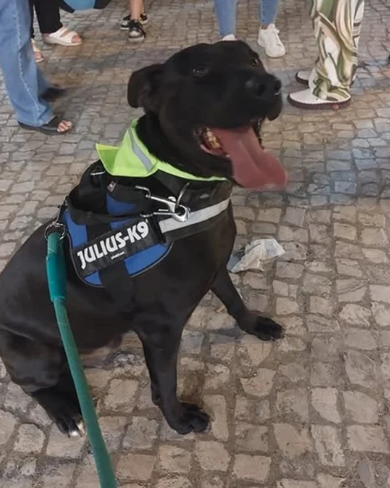
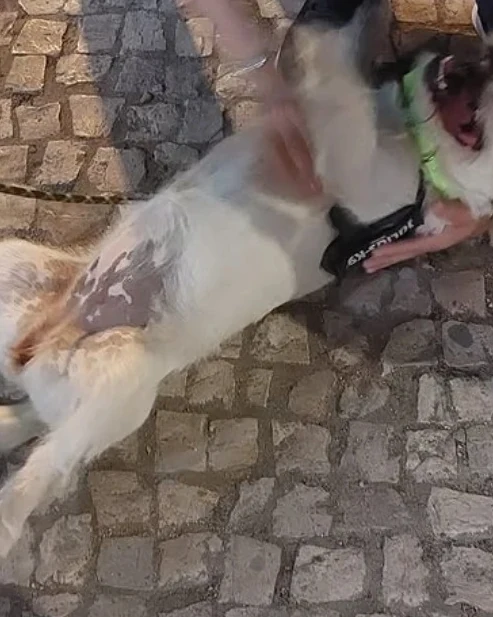
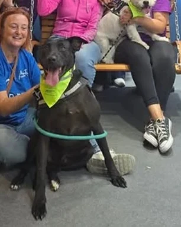

Adotar
Sai daqui com tudo tratado. Menos o nome — esse escolhes tu.
Cada animal do CROAE é entregue à nova família com vacinas em dia, desparasitação interna e externa, microchip em nome de quem adota, esterilização ou castração e um saco de ração para começar.
Como funciona
Três passos, sem pressa.
Vem conhecê-lo
Liga ou escreve para marcar. Podes começar por um passeio de fim de semana — é a melhor forma de perceber se há química.
Conversa com a equipa
O Gabinete Veterinário Municipal quer saber como vives: casa, rotina, outros animais. Não é um exame, é para o encaixe correr bem. documentos a confirmar
Vai para casa
Com o boletim de vacinas, o microchip já no teu nome e a esterilização feita ou marcada. Ficamos por perto para as dúvidas dos primeiros dias.
Entregue à nova família com
- Vacinas em dia
- Desparasitação interna e externa
- Microchip em nome do adotante
- Esterilização / castração
- Saco de ração
Quem espera
Estes já estiveram na rua connosco.
Fotografados nas Festas da Moita. A lista completa e atualizada está no Instagram @croaemoita — e passa a viver aqui assim que o centro nos enviar as fichas.

Nome a confirmar
Quero conhecê-lo
Nome a confirmar
Quero conhecê-loMais 37 boxes
As fichas dos restantes animais entram aqui — nome, idade, porte, feitio e tempo no centro.
Dúvidas frequentes
Antes de perguntares.
A adoção tem custos?
a confirmar com o Gabinete Veterinário Municipal. O que sabemos: vacinas, microchip, desparasitação e esterilização vão incluídos.
Posso adotar se não viver na Moita?
a confirmar. Liga para o 212 806 816 e pergunta — a equipa responde no próprio dia.
Tenho de ir ao centro ou posso conhecer o animal noutro sítio?
O CROAE leva animais aos eventos de adoção do concelho (Festas da Moita, mercado mensal). Segue o Instagram para saber o próximo. Fora disso, é no centro, com marcação.
E se não correr bem?
Fala com a equipa antes de decidir qualquer coisa. Há acompanhamento depois da adoção e há sempre a hipótese de família de acolhimento temporário como passo intermédio — ver Ajudar.
Adotar um gato é igual?
Sim: o centro recebe cães e gatos e o processo é o mesmo. As fichas dos gatos entram nesta página com as dos cães.
Marca o primeiro passeio.
Sábados e domingos, das 10h às 12h, com marcação prévia.